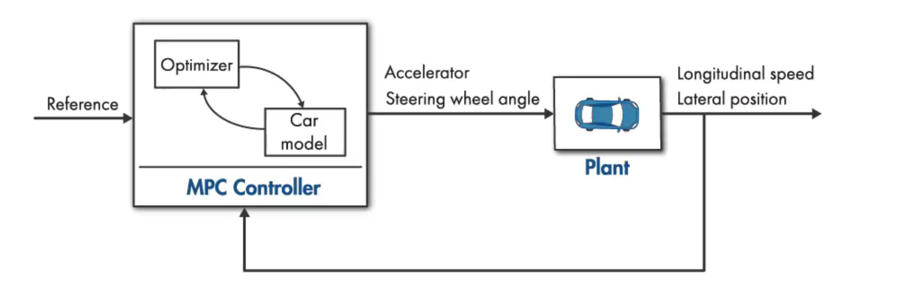
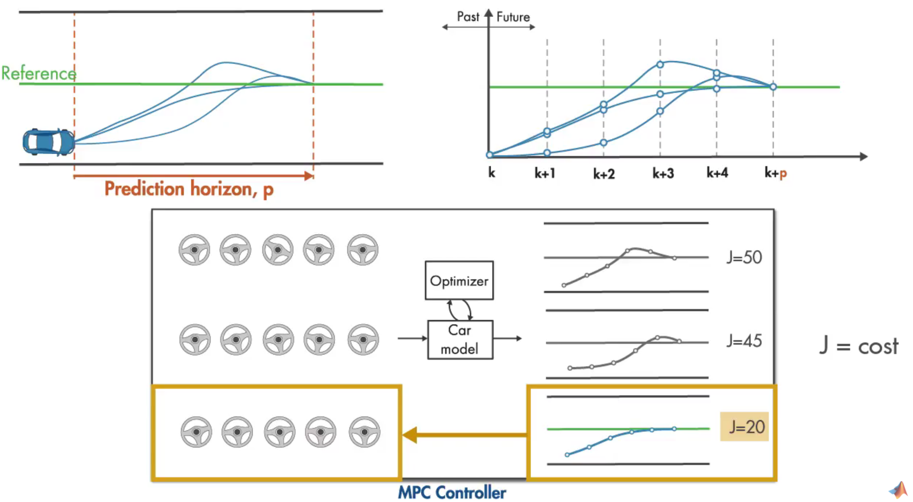
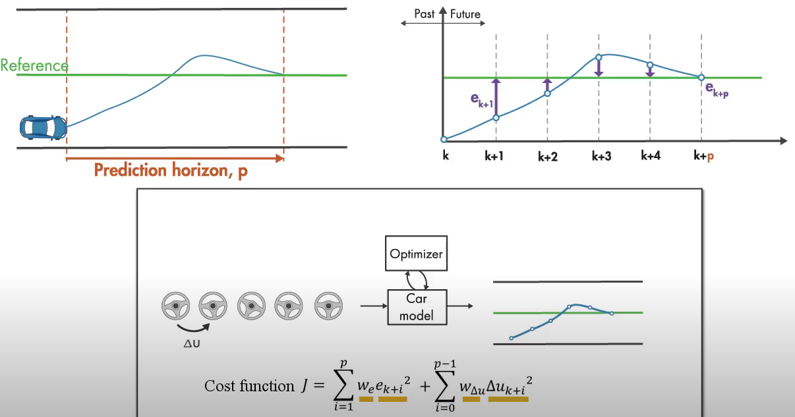
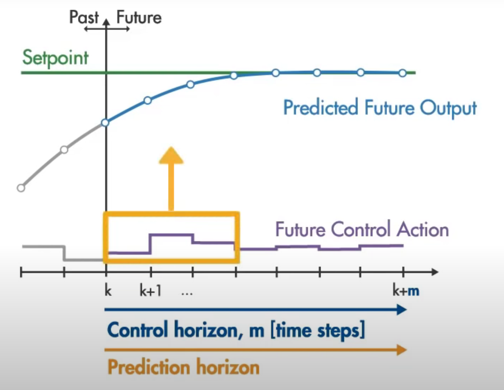
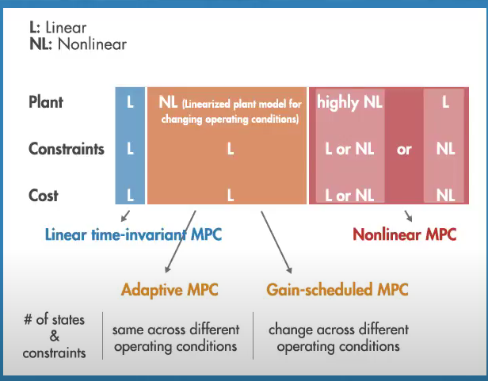

记录MPC设计的常用参数，学习使用Matlab中的MPC Designer
控制思想
MPC模型预测控制的基本目标是满足约束的情况，寻找如何能够在若干step的输入后能够使state追踪reference效果最佳，并由此决定当前step控制器的输出量。
如下图所示，车辆的目标是横向靠近reference，MPC控制器输入包括参考值reference，以及车辆状态longitudinal speed与 lateral position，输出量为方向盘转角以及加速度，车辆模型的输入为MPC控制器的输出，模型输出为车辆状态。为求简化，这里使纵向速度保持不变，车辆状态只取lateral position，同时MPC控制器输出量只有方向盘转角

MPC按照车辆动力学模型优化求解若干step后能使成本函数J（常为一个二次函数）最小化的方向盘转角

成本函数在此处使用的是每一个step中预测车辆模型输出（横向距离）与reference的差值平方，以及方向盘转角的平方的和，两项还要乘以各自的权重

MPC控制器的经验参数

- 采样时间：一般1/10 ~ 1/20的开环系统上升时间
- prediction horizon：即预测范围，一般取20~30个采样点
- control horizon： 预测范围的10% ~ 20%， 至少要2~3步，在控制区间之后的控制量保持恒定，减少计算量
- constraint：分为软约束和硬约束， 即变量变化的限制，一个经验法则是为输出量只设置软约束，并避免输入和输入变化率都有硬约束
- 权重weight：假如有多个控制目标，可以控制优化的权重
MPC的预测范围如果提升到无限的话则为最优控制
几种不同场景下的MPC控制器
- 对于线性被控对象、线性约束条件、二次成本函数，可以直接使用MPC，这是一个凸优化问题
- 如果对于非线性的被控对象、线性约束条件、二次成本函数，可以使用线性化的模型，并使用Adaptive MPC
- AMPC是适用于不改变MPC控制结构的被控对象模型，如果被控对象的模型发生改变很大（例如约束条件、或者状态数量变化）以至于需要改变整个MPC控制器的结构，则需要Gain-scheduled MPC，需要离线设置好不同状态量x对应的线性化MPC控制器，并在x改变的时候切换控制策略（消耗内存很多）
- 如果被控对象、约束条件、成本函数都是非线性的，则需要使用非线性MPC，但明显其计算非常难以满足real-time要求，通常也是个非凸函数，难以寻找global minimum

加速MPC的方式
- 状态量降维
- 减少预测范围
- 减少控制范围
- 减少约束条件
- 降低控制目标精度要求
- 模型阶数降低